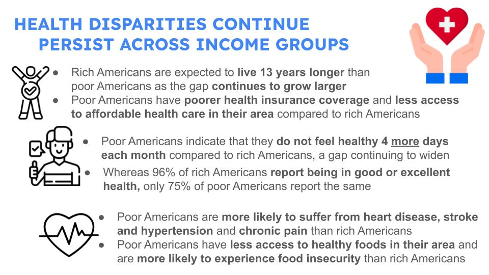

Large disparities in economic resources are reflected in differences in health outcomes between the wealthiest and poorest Americans.
The wealthiest Americans live 13 years longer than the poorest Americans and report overall better health.
Poorer Americans are far more likely to report that they did not have access to health care when they needed it or were not able to fill a prescription due to its costs, that they go for longer periods without insurance and have less coverage in their insurance, and that they have less access to affordable health care in the area they live.
In a similar vein, poorer individuals are 3.8 times more likely to report poorer health, 4.9 times more likely to report having an impairment, 3.6 times more likely to experience heart diseases and overall more likely to experience chronic diseases.
Economic disparities are also reflected in food security and the quality of diet, including the availability of healthy food in their area.